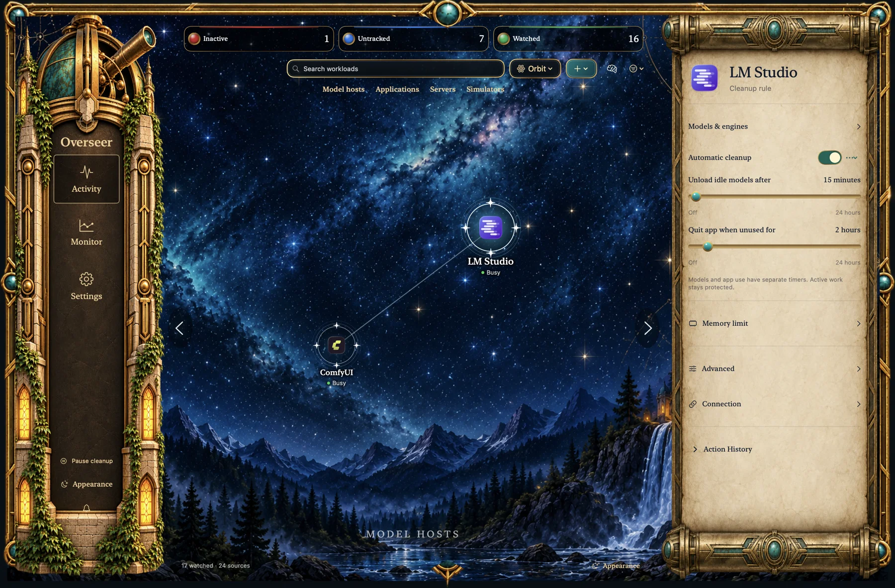

Models & their hosts
Unload idle chat models through LM Studio and Unsloth integrations. Inspect Unsloth’s reported image, video and speech-recognition residents too; media with unverified activity stays untouched.
✦ A little oversight for your Mac
The model you forgot to unload. The simulator still running. The localhost server from yesterday. Overseer helps you see what’s there—and choose when it’s time to stop.
The view from here
Apps and services become constellations. Explore them in Orbit or Tree, select a workload for its rules, and pan through a sky that keeps going.

A utility with a sense of place.
Bronze, parchment and a sky full of the things you’re working on.
Subtle stars, warm window light and a little shimmer. Animation pauses when the app is hidden or unfocused, and respects Reduce Motion.
Your machine. Your boundaries.
Observe without taking action, or give a workload a cleanup rule. Model unloading and quitting the app can have separate timers.
Try a rule · illustrative example
Select a workload. Change the rule. See what it would do.
Sample cleanup rule
Sample: model idle for 60 minutes; app unused for 60 minutes. The app has a separate 2-hour quit rule.
A simplified explanation, not a live connection to your Mac. Actual checks also verify ownership, current activity and your other rule conditions.
Busy is protected. Supported adapters check for generation, queues or other active work.
Unknown means unknown. An unavailable activity signal is shown clearly, rather than assumed to be idle.
Detection isn’t permission. Newly discovered items don’t automatically inherit cleanup rules.
The things that stay behind
Some work keeps running after the window disappears. Overseer brings those background workloads into the same view.
Unload idle chat models through LM Studio and Unsloth integrations. Inspect Unsloth’s reported image, video and speech-recognition residents too; media with unverified activity stays untouched.
Watch apps, ComfyUI, OpenWebUI and registered processes. Discover listening ports, investigate what owns them, and choose what deserves a rule.
Bring simulator devices under a shared policy while tracking each one. Set idle and maximum-open limits, even when the Simulator window has gone away.
Report processes holding model-weight files open, including ones without a watched-host association. A useful lead to investigate—not proof that a model is abandoned.
A memory for your machine
See resource spikes, health reports and cleanup history in Monitor. Expand an action to understand the rule and evidence behind it.
Keep up to a year of history by default, with options for up to five years. Check tracking storage use and enable a 1 GB warning.
Explore monitoring & history ↗Resource alerts can report high usage without stopping the process.
A compact history beside the selected workload, with views from 24 hours to 90 days.
Monitoring continues while the app runs in the background. Explicitly quitting Overseer stops it.
Before you hand over the watch
No. Discovery is a view of what’s there. You decide which items to watch and which rules can take action. Protected system items are identified separately, and unwanted detections can be ignored.
No. Reliable activity checks need an integration with the app managing the model. Open-file evidence can suggest a model worker, but cannot prove residency, inactivity or abandonment. It also misses workers that close their weight files after loading. Those findings are report-only.
Normal app cleanup requests a graceful quit. An app refusing to close or showing a save dialog is respected; force-quit is a separate explicit rule option. Review each app’s rules before enabling cleanup.
No. Overseer is a native local utility. It does not use an LLM to make cleanup decisions. Some local service integrations need an API token, stored in macOS Keychain.
No. Closing the dashboard leaves the menu-bar app running, but explicitly choosing Quit stops monitoring. Open Overseer again to resume. It doesn’t install separate background agents.
Overseer is currently a personal macOS app in development. There is no public download here yet. Ask about availability if you’d like to know more.
Made for the work you love doing
Built by Zach Mackay, for a Mac full of projects.
Ask about Overseer In development · macOS 14 or later · No public download yet